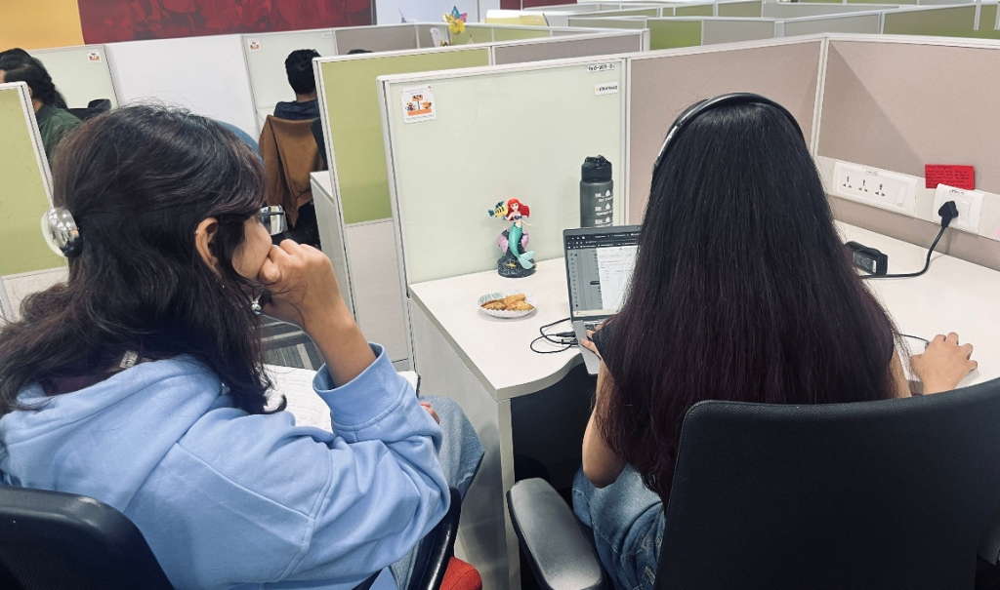
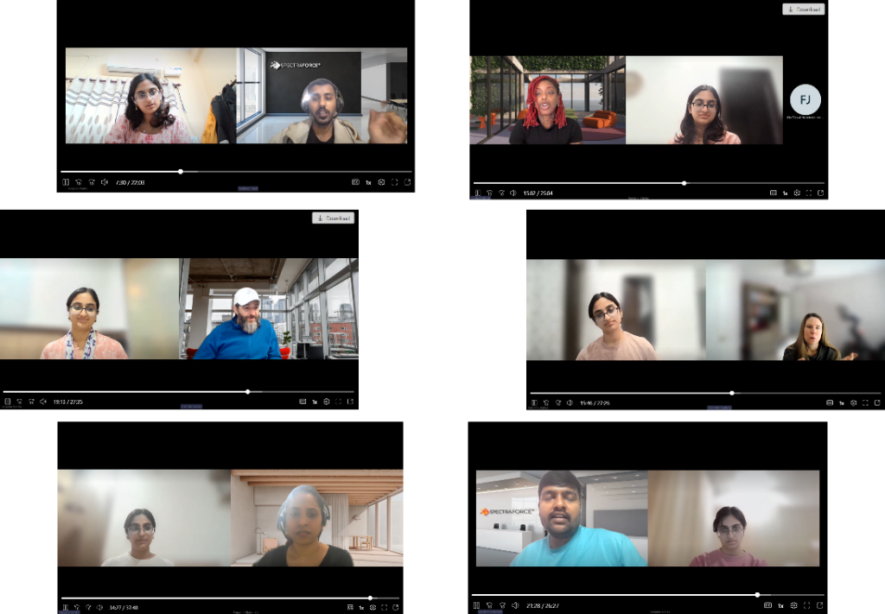
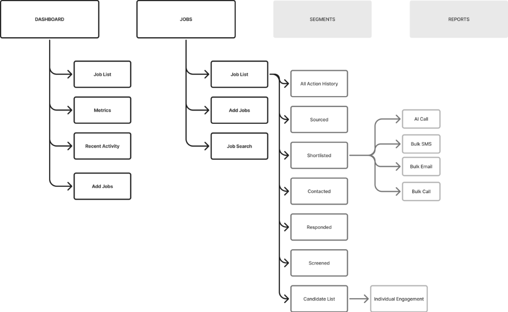
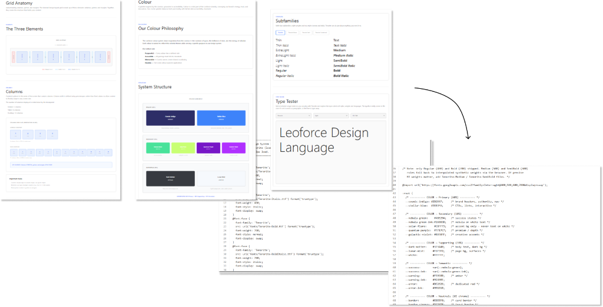
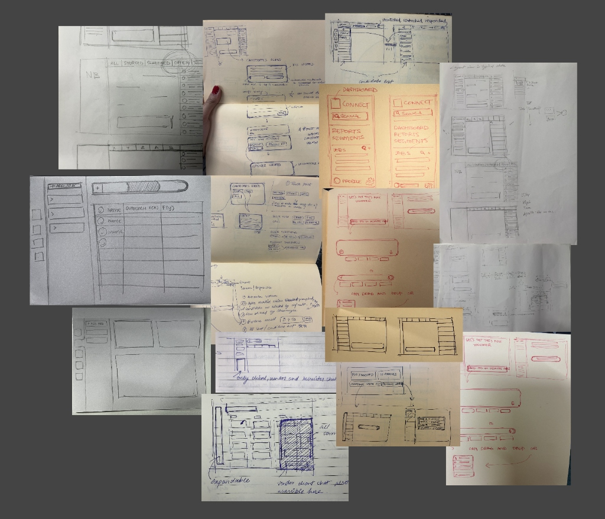

What is Connect?
Connect is an existing B2B in-house product that builds recruiter-candidate relationships by optimizing communication flows.

Business Brief:
Redesign Connect to enable enhanced communication and peer collaboration between freelance recruiters, SMBs, and candidates.
Why Connect x Freelance Recruiter?
Freelance recruiters and SMBs represent a fragmented, underserved segment of the $690B+ recruiting market — one that lacks purpose-built infrastructure designed for their specific workflows, which still operate through email, spreadsheets, and disconnected tools as they cannot afford expensive enterprise software.
The Double Diamond Design Process
The process followed was the typical Double Diamond process at each step. It included various cross-functional stakeholders at each stage for their opinions and structured feedback loops.
Brainstorming
Desk research, shadowing recruiters, identifying core pain points & initial features.
Overarching Flows
Outreach flow (mapping communication) & primary flow (recruiter end-to-end process).
Sketching & Wireframes
Low-fi wireframing, Information Architecture, and design system specs.
Iterations & Handoff
Collaborative refinement, edge case discovery, and roadmap documentation.
Desk and Primary Research, Shadowing
Market Spending & Reports
Analyzed independent contractor adoption rates, remote hiring trends, and existing Leoforce platform usage patterns.
Shadowing Recruiters
Observed daily recruiter operations in real-time to witness context switching between email, Excel, WhatsApp, and candidate logs.
Synthetic Analysis
Synthesized qualitative interview data into core themes: Communication Fragmentation, Feedback Loops, and Trust Networks.

12 Recruiter Interviews & 10 Candidate Interviews
how_to_reg Freelance Recruiters (12 Interviews)
- Understand daily workflows and identify communication gaps.
- Expose severe limitations of existing free tools like Excel & Email.
- Map out time spent managing spreadsheets vs. closing deals.
sentiment_dissatisfied Candidates (10 Interviews)
- Understand frustrations & pain points during the recruitment process.
- Answer: "Why are candidates being ghosted by recruiters?"
- Identify broken feedback loops and post-interview silence.

Leveraging AI in UX Research
With my team lead's guidance, I leveraged AI in research to accelerate milestones and create a faster feedback loop before stakeholder review.
IA, Design System & Screen Iterations
Information Architecture
Structuring the product navigation across Dashboard, Jobs (Job List, Add Jobs, Job Search, Action History, Sourced, Shortlisted, Contacted, Responded, Screened, Candidate List), Segments, and Reports.

Leoforce Design Language
Establishing system structure, color philosophy (Cosmic Indigo, Stellar Blue, Nebula Green, Solar Flare, Quantum Purple), grid anatomy, and typography specs.


UI Iterations & Functional Requirements
Second collaborative brainstorming session focused on identifying and iterating on key features and functional requirements for the Connect platform.

High-Fidelity Interface System
Consolidating fractured communication channels, spreadsheets, and candidate pipelines into a cohesive, human-centered SaaS experience.
Protected Under Non-Disclosure Agreement (NDA)
Unblurred views are protected under client NDA. Access complete designs in the password-protected Figma file.
Mission Control: At-a-Glance Hiring Velocity
Freelance recruiters handle multiple client briefs simultaneously with no centralized oversight. This primary dashboard presents real-time pipeline status (Active Jobs, 1,240 Total Candidates, 4 Interviews Today, 92% Success Rate) alongside an auto-updated candidate activity feed.

Eliminates tab-switching between Google Sheets, Gmail, and WhatsApp.
Tracks candidate status changes the second an interview is confirmed.
One-click role creation and fast batch candidate CSV imports.
Unified Candidate Hub: Solving the Communication Void
Candidate research revealed 80%+ of ghosting happens due to broken manual email chains. This interface synthesizes SMS, Email, Phone, and AI into a synchronized conversation timeline with smart reply recommendations and instant action shortcuts.

Switch seamlessly between SMS, Email, and Phone calls without losing chat context.
Smart contextual prompts draft personalized responses in seconds.
Schedule interviews, generate offer templates, or run screening calls in 1 click.
AI Match Scoring & 1-Click Automated Batch Outreach
Instead of reading through dozens of PDF resumes, the AI Assistant ranks candidates with verifiable match percentages (96%, 95%, 94%) and surfaces dynamic bulk outreach actions: Autodial sequences, AI Voicemail drops, personalized bulk SMS, and automated email campaigns.

Immediate visual ranking of candidate suitability based on JD parameters.
Executes autodial pipelines with pre-recorded recruiter voice notes.
Instant segmentation: Sourced, Shortlisted, Contacted, Responded, Screened.
Conversational JD Builder: Natural Language Job Creation
Traditional B2B ATS software forces users through rigid 20-field forms. Connect introduces a fluid, conversational prompt area where recruiters can paste existing briefs, dictate via voice, or click quick-actions to automatically draft screening questions and sourcing plans.

Way Forward & Next Steps
Implement Edge Cases
During the iteration process we found a lot of edge cases which we plan to implement in the next phase of development.
Develop Segments & Reports
While we have a basic idea for what we want to do with segments and reports, we need to build upon it to develop it further.
Learning Outcomes
Difficult Conversations
Handling disagreements with colleagues and asking hard questions even if it isn't a great look on me.
Building Relationships
Maintaining good relations with all kinds of people — stakeholders, developers, users — is non-negotiable.
Intent + Quality Output
Leveraging AI well doesn't replace thinking. It maximizes quality output when paired with intent.
Design is Intangible
A true designer's value isn't just in Figma or Claude skills. It's the intuition and empathy developed from understanding users deeply.
Code Changes How You Design
Started exploring frontend development to close the gap between design and implementation. Understanding how code, components, CSS tokens, and layout constraints work fundamentally reshapes how you architect and design digital products.